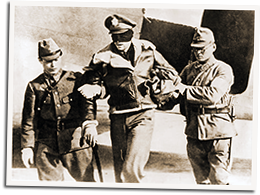

|
j
a v a s c r i p t |
October 20, 1942

Captured Tokyo Raider
A picture shows one crewmember of the Doolittle Raid was captured in China. They were found "guilty of inhuman conduct," and will be "court martialled." America's so-called dare devils wantonly bombed hospitals, schools and civilian houses, an article says. "It was confessed that a group of school children were strafed to give Japanese kids a taste of bullets." Filipinos were stunned by the audacity of the Japanese allegations. As one put it, "Mad, yes, but never did I believe they were really crazy." Anyway, someone didn't tell Nakashima that the P.I wasn't supposed to know about the raid. |
|
|
|
|